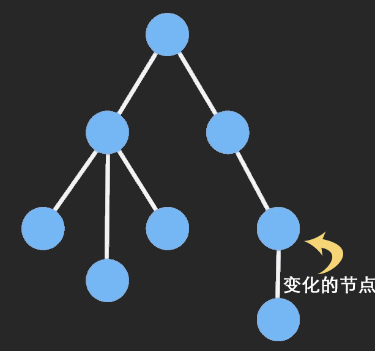

说说你对immutable的理解？如何应用在react项目中？
参考答案
一、是什么
Immutable，不可改变的，在计算机中，即指一旦创建，就不能再被更改的数据
对 Immutable 对象的任何修改或添加删除操作都会返回一个新的 Immutable 对象
Immutable 实现的原理是 Persistent Data Structure（持久化数据结构）:
- 用一种数据结构来保存数据
- 当数据被修改时，会返回一个对象，但是新的对象会尽可能的利用之前的数据结构而不会对内存造成浪费
也就是使用旧数据创建新数据时，要保证旧数据同时可用且不变，同时为了避免 deepCopy 把所有节点都复制一遍带来的性能损耗，Immutable 使用了 Structural Sharing（结构共享）
如果对象树中一个节点发生变化，只修改这个节点和受它影响的父节点，其它节点则进行共享

二、如何使用
使用Immutable对象最主要的库是immutable.js
immutable.js 是一个完全独立的库，无论基于什么框架都可以用它
其出现场景在于弥补 Javascript 没有不可变数据结构的问题，通过 structural sharing来解决的性能问题
内部提供了一套完整的 Persistent Data Structure，还有很多易用的数据类型，如Collection、List、Map、Set、Record、Seq，其中：
- List: 有序索引集，类似 JavaScript 中的 Array
- Map: 无序索引集，类似 JavaScript 中的 Object
- Set: 没有重复值的集合
主要的方法如下：
- fromJS()：将一个js数据转换为Immutable类型的数据
const obj = Immutable.fromJS({a:'123',b:'234'})- toJS()：将一个Immutable数据转换为JS类型的数据
- is()：对两个对象进行比较
import { Map, is } from 'immutable'
const map1 = Map({ a: 1, b: 1, c: 1 })
const map2 = Map({ a: 1, b: 1, c: 1 })
map1 === map2 //false
Object.is(map1, map2) // false
is(map1, map2) // true- get(key)：对数据或对象取值
- getIn([]) ：对嵌套对象或数组取值，传参为数组，表示位置
let abs = Immutable.fromJS({a: {b:2}});
abs.getIn(['a', 'b']) // 2
abs.getIn(['a', 'c']) // 子级没有值
let arr = Immutable.fromJS([1 ,2, 3, {a: 5}]);
arr.getIn([3, 'a']); // 5
arr.getIn([3, 'c']); // 子级没有值如下例子：使用方法如下：
import Immutable from 'immutable';
foo = Immutable.fromJS({a: {b: 1}});
bar = foo.setIn(['a', 'b'], 2); // 使用 setIn 赋值
console.log(foo.getIn(['a', 'b'])); // 使用 getIn 取值，打印 1
console.log(foo === bar); // 打印 false如果换到原生的js，则对应如下：
let foo = {a: {b: 1}};
let bar = foo;
bar.a.b = 2;
console.log(foo.a.b); // 打印 2
console.log(foo === bar); // 打印 true三、在React中应用
使用 Immutable 可以给 React 应用带来性能的优化，主要体现在减少渲染的次数
在做react性能优化的时候，为了避免重复渲染，我们会在shouldComponentUpdate()中做对比，当返回true执行render方法
Immutable通过is方法则可以完成对比，而无需像一样通过深度比较的方式比较
在使用redux过程中也可以结合Immutable，不使用Immutable前修改一个数据需要做一个深拷贝
import '_' from 'lodash';
const Component = React.createClass({
getInitialState() {
return {
data: { times: 0 }
}
},
handleAdd() {
let data = _.cloneDeep(this.state.data);
data.times = data.times + 1;
this.setState({ data: data });
}
}使用 Immutable 后：
getInitialState() {
return {
data: Map({ times: 0 })
}
},
handleAdd() {
this.setState({ data: this.state.data.update('times', v => v + 1) });
// 这时的 times 并不会改变
console.log(this.state.data.get('times'));
}同理，在redux中也可以将数据进行fromJS处理
import * as constants from './constants'
import {fromJS} from 'immutable'
const defaultState = fromJS({ //将数据转化成immutable数据
home:true,
focused:false,
mouseIn:false,
list:[],
page:1,
totalPage:1
})
export default(state=defaultState,action)=>{
switch(action.type){
case constants.SEARCH_FOCUS:
return state.set('focused',true) //更改immutable数据
case constants.CHANGE_HOME_ACTIVE:
return state.set('home',action.value)
case constants.SEARCH_BLUR:
return state.set('focused',false)
case constants.CHANGE_LIST:
// return state.set('list',action.data).set('totalPage',action.totalPage)
//merge效率更高，执行一次改变多个数据
return state.merge({
list:action.data,
totalPage:action.totalPage
})
case constants.MOUSE_ENTER:
return state.set('mouseIn',true)
case constants.MOUSE_LEAVE:
return state.set('mouseIn',false)
case constants.CHANGE_PAGE:
return state.set('page',action.page)
default:
return state
}
}1. Immutable 的定义与背景
1.1 Immutable 的定义
- Immutable 数据结构：Immutable（不可变）数据结构指的是一旦创建就不能被修改的数据结构。任何对其内容的修改操作都会返回一个新的数据结构，而不是直接修改原数据结构。
- 优势：
- 避免副作用：通过避免直接修改数据，减少了副作用和潜在的错误。
- 提高性能：可以利用结构共享和浅比较优化性能，尤其在处理大数据集和复杂状态时。
- 简化调试：数据的不可变性使得状态变得可预测，更容易调试和测试。
1.2 常用 Immutable 数据结构库
- Immutable.js：由 Facebook 开发的一个库，提供了不可变的数据结构，如
Map、List、Set等。 - Immer：一个用于简化不可变更新操作的库，通过代理对象允许以“可变”的方式编写代码，但实际操作的是不可变数据。
2. Immutable 数据结构的应用
2.1 在 React 中的应用场景
- 状态管理：不可变数据结构在状态管理中非常有用，可以帮助我们确保状态的不可变性，简化状态更新逻辑。
- 性能优化：由于不可变数据结构支持高效的浅比较，可以减少不必要的组件重新渲染，提高应用性能。
2.2 使用 Immutable.js
- 安装：
``bash<br> npm install immutable<br> ``
- 示例：
```javascript<br> import { Map } from 'immutable';
const state = Map({<br> user: Map({<br> name: 'Alice',<br> age: 25<br> })<br> });
// 更新状态<br> const newState = state.setIn(['user', 'age'], 26);
// 输出：25<br> console.log(state.getIn(['user', 'age'])); <br> // 输出：26<br> console.log(newState.getIn(['user', 'age']));<br> ```
2.3 使用 Immer
- 安装：
``bash<br> npm install immer<br> ``
- 示例：
```javascript<br> import produce from 'immer';
const initialState = {<br> user: {<br> name: 'Alice',<br> age: 25<br> }<br> };
const newState = produce(initialState, draft => {<br> draft.user.age = 26;<br> });
// 输出：25<br> console.log(initialState.user.age); <br> // 输出：26<br> console.log(newState.user.age);<br> ```
3. 在 React 中应用 Immutable
3.1 在 Redux 中使用 Immutable
- Immutable.js：可以用于 Redux 的状态管理，确保状态的不可变性，减少了 reducer 中对状态的直接修改。
- 示例：
```javascript<br> import { createStore } from 'redux';<br> import { Map } from 'immutable';
const initialState = Map({<br> counter: 0<br> });
function reducer(state = initialState, action) {<br> switch (action.type) {<br> case 'INCREMENT':<br> return state.update('counter', count => count + 1);<br> default:<br> return state;<br> }<br> }
const store = createStore(reducer);<br> ```
3.2 使用 Immutable 数据结构优化性能
- PureComponent 和 shouldComponentUpdate：在使用不可变数据结构时，可以利用
PureComponent或shouldComponentUpdate进行优化，避免不必要的渲染。 - 示例：
```javascript<br> import React, { PureComponent } from 'react';<br> import { Map } from 'immutable';
class MyComponent extends PureComponent {<br> render() {<br> return <div>{this.props.data.get('value')}</div>;<br> }<br> }
const data = Map({ value: 42 });
function App() {<br> return <MyComponent data={data} />;<br> }<br> ```
3.3 状态更新的不可变性
- 避免直接修改：在处理状态更新时，避免直接修改原状态对象，使用不可变操作来生成新的状态。
- 示例：
``javascript<br> function updateState(state, newValue) {<br> return {<br> ...state,<br> value: newValue<br> };<br> }<br> ``
4. 总结
- 不可变数据结构：提供了一种更可靠、更高效的方式来管理状态，减少副作用和潜在的错误。
- 库选择：
Immutable.js提供了丰富的数据结构和操作方法，适合大规模应用。Immer提供了更直观的 API，适合简化不可变数据的操作。 - 在 React 中的应用：通过不可变数据结构优化性能、简化状态管理和调试，使 React 组件和状态管理更加高效和可控。